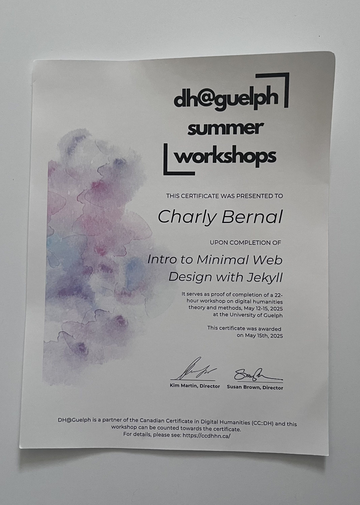

The real origins of the site!

This is a certificate for a Digital Humanities workshop I did last Summer (2025). I completed 22 hours of digital minimalism theory and methods, which ultimately led to the creation of this website.
Initially, I had created a simple archive of my personal items. I was inspired by a guest speaker, an archivist creating a collection of contemporary items-- “random” items. (Click here to view version 1)
In my second-year of University I moved off residence and into a student house shared with 3 other roommates. This was the first room I didn’t have to share. Months prior, leading up to the second year, I spent planning exactly how I wanted my room to look. I drew out, in a journal I kept at the time, where my furniture would go, what decorations would go on which wall, and everything down to the bedspread. After sharing a room with my brother for basically my whole life, I was so excited to be able to do whatever I wanted with this one. In the months that followed, I had gotten so many compliments on the room, its ambience, its intentionality, and mostly, its reflection of personality. To be frank, I agree with the admires because I put my entire self into this room.
A few months after I moved away in my first year, my parents moved out of my childhood home abruptly, so I didn’t get to save any childhood memorabilia. Most of that is lost to me now; I have no physical reminders of what I did, what I used to enjoy, or how I spent my time when I was younger. I only have faint memories of my younger self.
With that, I want to remember this room, and how I spent my time in it, what it looked like, and how it reflects who I was. Mostly everything I own is here with me in Guelph; my room in Markham is scarce and filled with random things that aren’t mine. Here, everything is mine. This room of my own has allowed me to grow in every way possible; the best and worst times have happened right here.
- Sleepovers
- Movie nights on my projector
- Pregames before nightsout
- All my friends getting ready in one mirror
- Breakups
- All-nighters for assignments
- Karoke parties
- Haircuts
- Zoom interviews
- Lots of crying + laughing
Alongside Port Dover, this workshop will always mark the Summer of 2025. This intimate learning experience exposed me to so many different views of the digital humanities and allowed me to work more closely with my friends and professors. I will always adore my time as a CTS student at UofG and am incredibly grateful that my work has always been creative, expansive and different from my peers. I wonder if there will be a day when the question following “What’s your major?” isn’t “What’s that?”.
Artifact Metadata
| Type | Description |
|---|---|
| Name | DH@Guelph Summer Workshop Certificate |
| Collection | Varioua |
| Origin | DH@Guelph Summer Workshop |
| Date | May 17, 2025 |
| Location | Guelph, ON |
| Condition | Good |
DH@Guelph Summer Workshops Certificate
I remember the specific hum of the lab during those four days in May. This certificate isn't just a piece of paper; it’s a snapshot of the 22 hours I spent deconstructing the web and learning how to build something lean and intentional. Jekyll felt like a revelation—moving away from the 'bloat' and getting back to the logic of the code.
Looking at the watercolor splash on the side, I’m reminded of how the digital humanities always seem to balance that line between the rigid and the artistic. I kept this because it marks the moment I started thinking seriously about how to structure information, a mindset that eventually led me to building this very archive. It’s the starting point for the digital skeleton of everything I’m cataloging now.
Artifact Metadata
| Type | Description |
|---|---|
| Artifact ID | DOC-CERT-2025-DHG |
| Title | DH@Guelph Summer Workshops Certificate |
| Category | Personal Records / Professional Development |
| Date Awarded | May 15, 2025 |
| Organization | University of Guelph / DH@Guelph |
| Physical Description | A printed certificate on white paper featuring a vibrant, watercolor-style splash of purple, blue, and pink on the left margin. The text identifies the recipient as Charly Bernal for the completion of "Intro to Minimal Web Design with Jekyll." It includes the signatures of Directors Kim Martin and Susan Brown. |
| Condition | Excellent; the paper appears crisp and well-preserved, with no visible creasing or wear. |